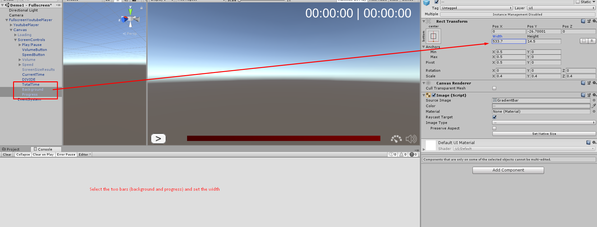

Get Started
This plugin by default uses the unity video player, we recommend you to use "unity 2018.2" is the version that have the most stable video player. Some versions of unity there's a lot of issues in video player system, you can use your custom player too.
Tested on android 4.3+ only.
Things you need to know about the youtube player:
-For high quality video playback you need to have a good speed of internet.
-For high quality playback we use 2 video players, since unity don't support the audio format of youtube, we have a video with low quality not rendering(api mode), using only the audio, and other video without audio, both synced with other.
-You can use your own player or third party players like: Easy Movie Texture, AvPro, UMP, VLC for unity, etc... We have a prefab to use with that, you just need to call your function to play the generated url.
-We Update the asset every time that have urgent fix, if there's changes on youtube side for example (uncommon, happened 1 time only), we provide solution very fast using email support, to fit with youtube changes you can get the urls from our dedicated server (force get from web server boolean in the settings), if the connection retry for 2 times, automatically we get the url from the server, the server is updated on the go, at every change.
Installation
The instalation is easy, you just need to import the package to your project, and drag the desired prefab to the scene, we recommend to check the demos scenes first.
Prefabs
We have 4 kind of prefabs, use what you desire for your project and configure what in the way you like, to fit your project.
The prefabes are in the folder Lightshaft/Resources/Prefabs/
Prefabs:
| Name | Function |
|---|---|
| FullscreenYoutubePlayer | Play youtube videos in fullscreen, you can configure how it will fit in the screen, enable/disable player controls. |
| Youtube360PlayerFullscreen | It's a sphere model that render the video, and a simple control (you can change for your own controll, like ar, vr games), the video are rendered in the sphere material, you can change the render target easy. |
| YoutubePlayer | It's a simple player, that comes with a plane to render the video, you can change the render target easy. |
| YoutubePlayer_ForCustomPlayer | This prefab dont play the videos, only load the urls so you can pass that url to your custom player. |
The settings in the prefabs explains for itself.
Usage
How to play youtube video
There's two ways to call to play the youtube video.
First method:
You can put the youtube link in the Youtube url field. And configure the settings, like (auto start, show player controls, etc). If you are not using play on start you can use the second method.
Second method:
You can reference YoutubePlayer class in your code and call the Play function using the url as parameter example:
public YoutubePlayer ytPlayer;
void YourCustomFunction(){
ytPlayer.Play("youtubelink or id");
}
How to change the render target
To change the render target is easy, see image for reference, you can set if you want to play in fullscreen rendering to camera or you can put in a object material(for UI we recommend Render Texture(demo included)), you can put in any kind of object examples:(virtual cinema screen, cubes,planes, 3D tv's).
Set video start time
To make video start from a desired time, you can use two ways, using a customized url from youtube or enable the bool Start From Second in inspector and put the time in seconds in the Start From Second Time.
Using custom url: To start a video from a desired time using a custom url you can set the url like that: https://youtu.be/M38aWHxwtXE?t=32 where 'M38aWHxwtXE' is the video id, and t=32 is the time.
Using setting in inspector: Just enable the bool Start From Second and put the time in the Start From Second Time.
Change video time
You can change the video time calling the funtion Seek(); passing the time as parameter.
Changing Progress Bar Width
If the progress bar not fit your resolution you can set the width of the progress bar, just select the two bars and set the width(image)
Custom Events
If you want to customize the functionality, you have some events (image) that you can use when things are done in background. You can put your custom functions there.
Using other video players
If you dont want to use unity video player you can use other video player like UMP, AVpro, Easy Movie Texture,etc..
To do that you can use YoutubePlayer_ForCustomPlayer prefab or enable the bool LoadYoutubeUrlsOnly, this will only load the url that you need to pass to your custom player. The result will be called in the function UrlReadyToUse.
Render the same video to other objects
You can render the same video to other objects, just use this option(image), and drag the other objects that you want (the material will be overwrited by video texture)
Customizing player controls
You can edit the canvas that are present in the prefab:
Get video title
You can get the video title using GetVideoTitle, this will only return the title if the video are start to load.
Deploy to webgl
Works for Firefox and Chrome
We recommend you to check the folder "Webgl Youtube Player Setup" in the project, upload the files to your server and change the url "https://youtubewebgl.herokuapp.com/download.php?mime=video/mp4&title=generatedvideo&token=" in YoutubePlayer to your own server, like in the readme of that folder. This will improve the speed of load.
This is important because, webgl there's a CORS policy, so you can't load external sites, you will use your server as a proxy, and will work.
Know issues
We disabled the fix on frame drop for editor because sometimes the editor gives too much frame drops and the video be unplayable in editor, we noticed this is a bug in editor.
For version 2018.3+ you can notice some frame drops and out of sync in editor, we tested in the builds here, and worked normal, i think is related to the editor bug (too much frame Drops).
Some versions of unity there's a sync issue, the video time and audio time are the same, but keep goind out of sync, the most stable and newer version is the 2018.2.
Safari webgl: unity video player(unity side) need to support webgl 1.0.
If you are using force get from web server and are deploying to android, you need to change one url, search for "https://unity-dev-youtube.herokuapp.com/api/info?url=" in YoutubePlayer.cs and change it to "https://temp-live-unity.herokuapp.com/api/info?url=", or you can deploy your own server look at the folder "Youtube Server Source" inside Lightshaft folder, and change that url to your own url.
Buffer!! unity video player there's no buffer yet, this is very sad. Hope they add this soon, will improve a lot the plugin.
Sometimes using editor the video frames drops more than normal, but i noticed that is a editor behavior only.
Support
If you are having issues, mail to kelvinparkour@gmail.com